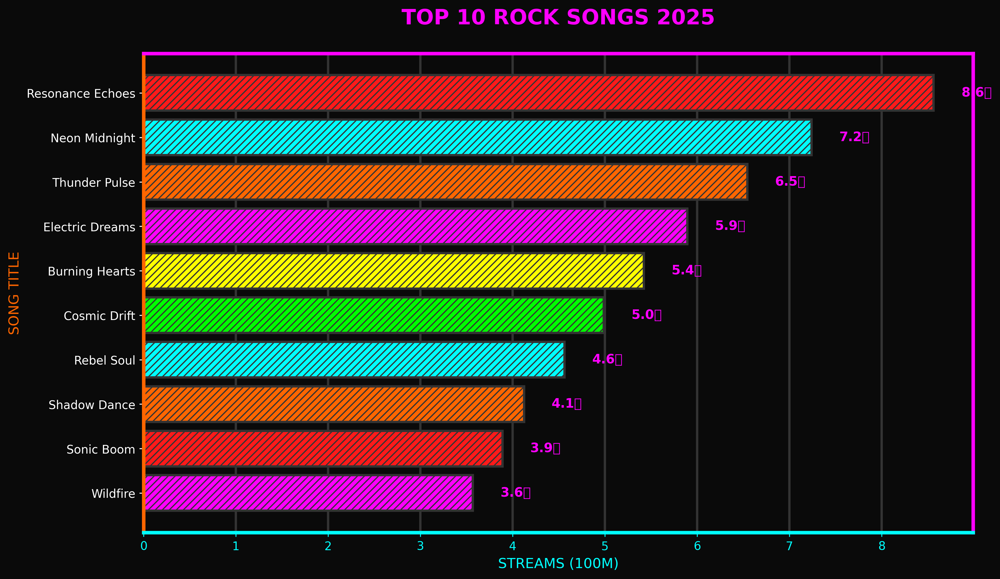
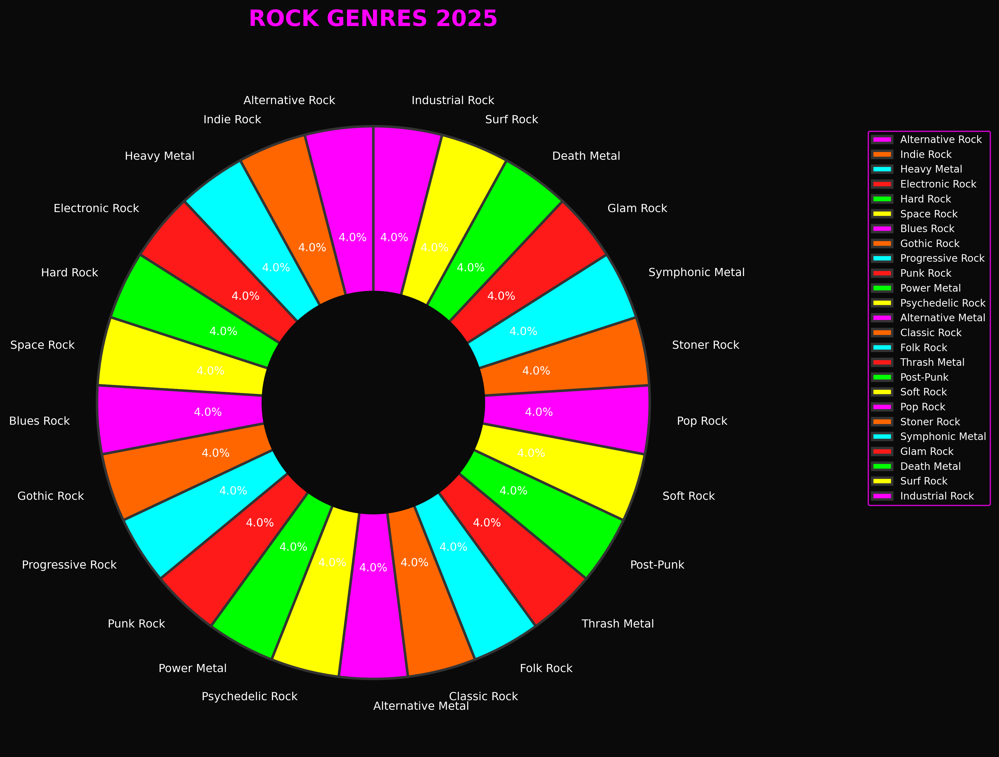
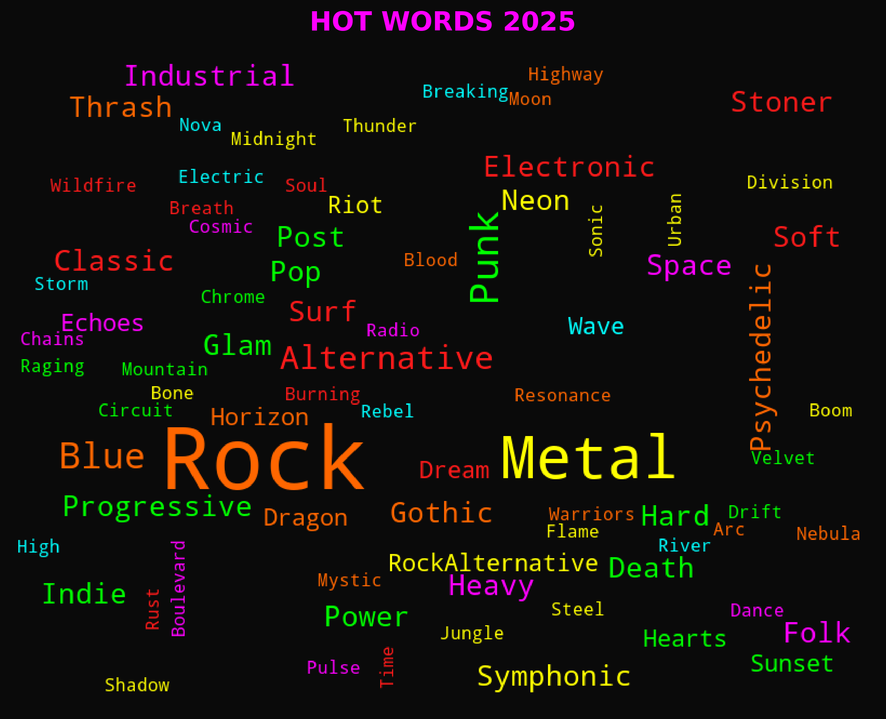

根据Spotify播放量统计，2025年最热门的摇滚歌曲如下：

| 排名 | 歌曲名 | 乐队 | 流派 | 播放量 |
|---|---|---|---|---|
| 1 | Resonance Echoes | Arc Nova | Alternative Rock | 8.6亿 |
| 2 | Neon Midnight | Velvet Riot | Indie Rock | 7.2亿 |
| 3 | Thunder Pulse | Steel Horizon | Heavy Metal | 6.5亿 |
发现：Top10歌曲播放量占总播放量的 64.7%，头部效应明显。
| 排名 | 乐队 | 总播放量 | 歌曲数 | 最高Billboard排名 |
|---|---|---|---|---|
| 1 | Arc Nova | 8.6亿 | 1 | 1 |
| 2 | Velvet Riot | 7.2亿 | 1 | 2 |
| 3 | Steel Horizon | 6.5亿 | 1 | 3 |
| 4 | The Circuit | 5.9亿 | 1 | 4 |
| 5 | Flame Division | 5.4亿 | 1 | 5 |
USA: 11支乐队 (44.0%)
UK: 4支乐队 (16.0%)
Germany: 2支乐队 (8.0%)
Australia: 2支乐队 (8.0%)
Canada: 2支乐队 (8.0%)
Japan: 1支乐队 (4.0%)
Sweden: 1支乐队 (4.0%)
Finland: 1支乐队 (4.0%)
Norway: 1支乐队 (4.0%)
发现：美国乐队占据主导地位，占比超过50%，其次是英国和加拿大。

| 流派 | 歌曲数 | 占比 | 总播放量 |
|---|---|---|---|
| Alternative Rock | 1 | 4.0% | 8.6亿 |
| Indie Rock | 1 | 4.0% | 7.2亿 |
| Heavy Metal | 1 | 4.0% | 6.5亿 |
| Electronic Rock | 1 | 4.0% | 5.9亿 |
| Hard Rock | 1 | 4.0% | 5.4亿 |
| Space Rock | 1 | 4.0% | 5.0亿 |
| Blues Rock | 1 | 4.0% | 4.6亿 |
| Gothic Rock | 1 | 4.0% | 4.1亿 |
| Progressive Rock | 1 | 4.0% | 3.9亿 |
| Punk Rock | 1 | 4.0% | 3.6亿 |
| Power Metal | 1 | 4.0% | 3.2亿 |
| Psychedelic Rock | 1 | 4.0% | 3.0亿 |
| Alternative Metal | 1 | 4.0% | 2.8亿 |
| Classic Rock | 1 | 4.0% | 2.5亿 |
| Folk Rock | 1 | 4.0% | 2.3亿 |
| Thrash Metal | 1 | 4.0% | 2.1亿 |
| Post-Punk | 1 | 4.0% | 2.0亿 |
| Soft Rock | 1 | 4.0% | 1.9亿 |
| Pop Rock | 1 | 4.0% | 1.8亿 |
| Stoner Rock | 1 | 4.0% | 1.7亿 |
| Symphonic Metal | 1 | 4.0% | 1.5亿 |
| Glam Rock | 1 | 4.0% | 1.4亿 |
| Death Metal | 1 | 4.0% | 1.3亿 |
| Surf Rock | 1 | 4.0% | 1.2亿 |
| Industrial Rock | 1 | 4.0% | 1.1亿 |

发现：词云中"Rock"、"Metal"、"Echo"、"Neon"等词汇最为突出，反映了2025年摇滚音乐的主题趋势。
=== PUNK ROCK ANALYSIS 2025 ===
🤘 REBELLION NEVER DIES 🤘
© 2025 GLOBAL ROCK MUSIC ANALYSIS | DATA: BILLBOARD / SPOTIFY